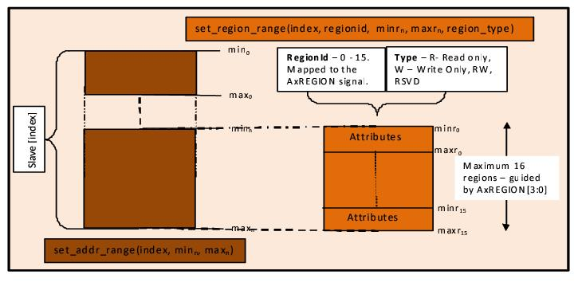

System level address map can be specified using system configuration method svt_axi_system_configuration::set_addr_range. The start address and end address can be specified for each slave in the system. Multiple address ranges can also be specified for a single slave. These address ranges can be specified as a continuous or a discontinuous.
Slave Region Support
The specified address ranges can be divided into maximum of 16 regions as guided by the AxREGION[3:0] signal of the AXI4 interface. These regions can be specified as continuous or discontinuous. The regions can be specified using method svt_axi_slave_addr_range::set_region_range. Every region is marked by a region-id ranging from 0-15.
The region can be associated to a region type, which defines the characteristics of the specified region. The region type can be specified as one of the arguments of the method svt_axi_slave_addr_range::set_region_range.
The following region types are currently supported:
R- Read Only
W - Write Only
RW - Read/Write
RSVD - Reserved
Tables 3‑14 depicts the slave response generated for a read transaction, based on the region attribute:
Table 3‑14 Slave Response for a Read Transaction
Type Attribute
Resultant Response
R- Read Only
OKAY
W - Write Only
SLV_ERR
RW - Read/Write
OKAY
RSVD - Reserved
SLV_ERR
Tables 3‑15 depicts the slave response generated for a write transaction, based on the region attribute:
Table 3‑15 Slave Response for a Write Transaction
Type Attribute
Resultant Response
R- Read Only
SLV_ERR
W - Write Only
OKAY
RW - Read/Write
OKAY
RSVD - Reserved
SLV_ERR
Figures 3‑4 pictorially shows the range and regions described above.
Figure 3‑4 Slave Response generated for Write transaction

Slave Response Generation
For each received transaction, the port monitor within the slave agent generates the appropriate response based on address range and region type. This response is populated in the svt_axi_transaction::rresp[] (for read transactions) or svt_axi_transaction::bresp (for write transactions) fields of the slave transaction object. This slave transaction is then provided to the slave agent sequencer. If the slave sequence running in the slave agent sequencer modifies the pre-populated response in slave transaction, the response might no longer be correct.
Figure 3‑5 Flow Diagram for Slave Response Generation